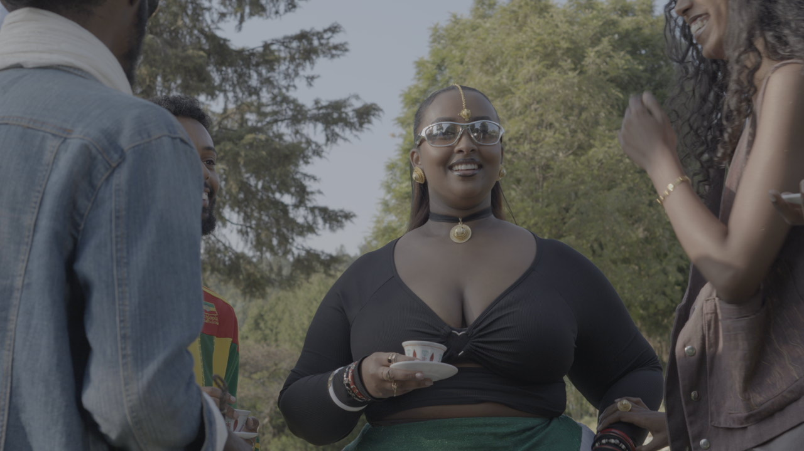
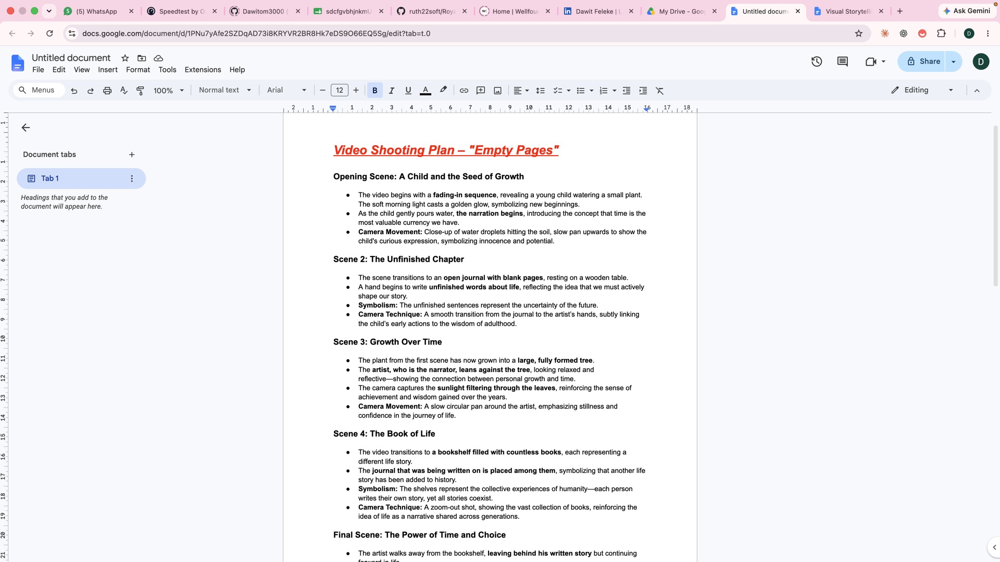
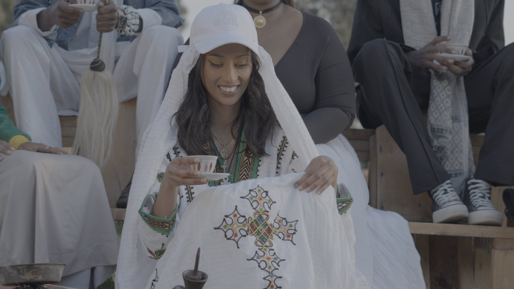
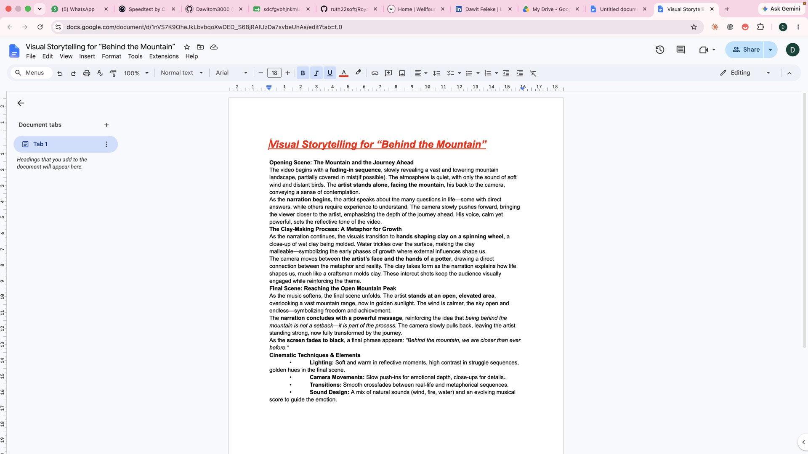

Content systems · Media production
Bana Records
Rebuilt an inconsistent content operation into a repeatable release system without flattening the creative process.

01 · Challenge
Releases were often planned late, production rhythms were inconsistent, and valuable content regularly failed to reach an audience.
The label needed enough structure to improve quality and reliability without turning creative work into a rigid corporate process.
02 · My role
I rebuilt the content pipeline, directed a three-person creative team, owned content OKRs, and later produced and edited original Bana productions from visual planning through final cut.
- Content strategy
- Kanban workflow
- Creative direction
- Production planning
- Filming and editing
03 · Process
Make the work visible.
See the bottleneck
Mapped where planning, approvals, production, and publishing were breaking down.
Create rhythm
Introduced release schedules, quality gates, and visible work-in-progress.
Make the work
Developed visual plans and contributed production, filming, and editing across four releases.
04 · Execution
A lightweight content operating system paired with hands-on creative production—clear enough to improve delivery while flexible enough for artists and stories.
05 · Results
The outcome.




Tools & methods
- Kanban
- Sony FX3
- DaVinci Resolve
- Content OKRs
Related links